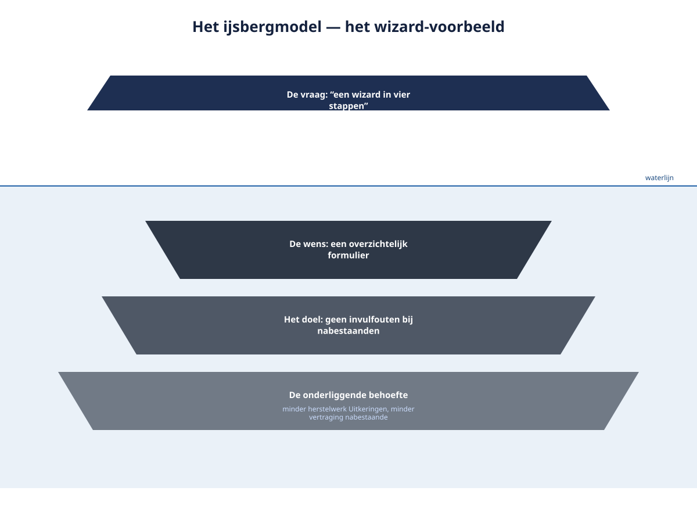
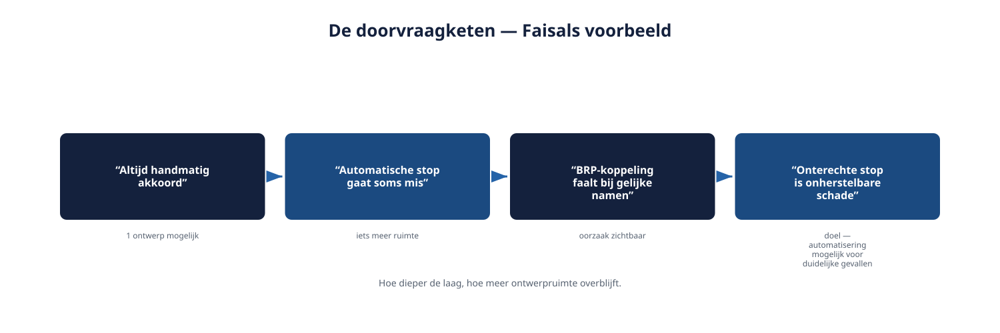
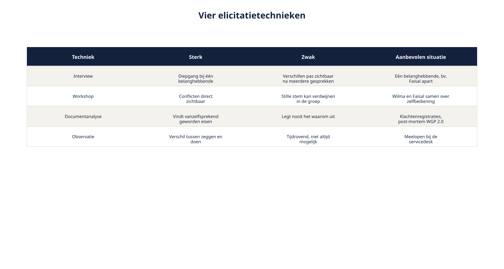

Deel 4 — Elicitatie: basistechnieken
Slidedeck · Ductus-cursus Requirements engineering · niveau 1 · deel 4 van 10 · 31 slides
Slide 1 — Titel
Elicitatie: basistechnieken
Van vraag naar behoefte
Cursus Requirements Engineering — Niveau 1, deel 4
Ductus
Slide 2 — Vandaag
- Het ijsbergmodel: vraag, wens, doel, behoefte
- Doorvragen zonder verhoor
- Vier basistechnieken en hoe je kiest
- Actief luisteren
- Bevinding R3 openen
Slide 3 — Citaat
"Er stond een schermontwerp met een wizard in vier stappen. Waarom vier? Dat weet ik echt niet."
Post-mortem WGP 2.0
Slide 4 — Niemand wist het meer.
Omdat niemand het ooit had gevraagd.
Slide 5 — 1. Het ijsbergmodel
Slide 6 — Figuur 4-1

Slide 7 — Vier lagen
- De vraag — wat iemand letterlijk zegt
- De wens — het beeld van de oplossing
- Het doel — wat men ermee wil bereiken
- De onderliggende behoefte — waarom dat doel ertoe doet
Hoe dieper, hoe meer ontwerpruimte overblijft.
Slide 8 — Dit is niet: elke oplossing afwijzen.
Een genoemde oplossing is waardevolle informatie.
De vaardigheid is: gebruiken als ingang, niet als eindpunt.
Slide 9 — Opdracht 4.1 — De ijsberg afpellen
Vier uitspraken. Vraag, wens, doel, behoefte.
Waar je moet gokken: benoem de aanname.
Individueel · 15 minuten
Slide 10 — 2. Doorvragen
Slide 11 — Citaat
"Ik wil dat een medewerker altijd handmatig akkoord geeft voordat de uitkering stopt."
Faisal — eerste antwoord
Slide 12 — De keten
- Waarom? → "Een automatische stop gaat soms verkeerd"
- Waarom gaat die soms verkeerd? → "Verkeerde koppeling bij gelijke namen"
- Waarom is dat een risico dat u wilt afvangen? → "Onterecht gestopte uitkering — nooit meer goed te maken bij het vertrouwen"
Slide 13 — Van "altijd handmatig"
naar "bij twijfel over de koppeling"
Drie stappen. Een heel andere ontwerpruimte.
Slide 14 — Drie aandachtspunten
- Niet letterlijk vijf keer "waarom" — varieer
- Stop bij een doel dat op zichzelf staat
- Erken voordat je doorvraagt
Geen verhoor. Een gesprek.
Slide 15 — Figuur 4-2

Slide 16 — Wat verandert er als je iteratief werkt?
- Niet in één gesprek tot de bodem voor het héle systeem
- Wel: twee gerichte waarom-vragen per refinement
- Blijft gelden: stoppen bij een doel op zichzelf, oplossing als ingang gebruiken
Slide 17 — Opdracht 4.2 — De doorvraagketen
Twee uitspraken uit 4.1. Minimaal drie stappen.
Wissel daarna en beoordeel elkaars keten.
Tweetallen · 20 minuten
Slide 18 — 3. Vier basistechnieken
Slide 19 — Sterk en zwak
| Techniek | Sterk in | Zwak in |
|---|---|---|
| Interview | Diepgang bij één persoon | Verschillen tussen mensen |
| Workshop | Conflicten direct zichtbaar | Stille stemmen verdwijnen |
| Documentanalyse | Wat "vanzelfsprekend" is geworden | Legt nooit het waarom uit |
| Observatie | Zeggen versus doen | Tijdrovend, niet altijd mogelijk |
Slide 20 — Figuur 4-3

Slide 21 — Kiezen op drie vragen
- Hoeveel belanghebbenden, en raken ze elkaar?
- Bestaat er al gedrag om te bestuderen?
- Hoe gevoelig is het onderwerp?
In de praktijk: combineren, niet kiezen uit één.
Slide 22 — Opdracht 4.3 — Techniekkeuze
Vier situaties uit het Nabestaandenloket.
Welke techniek eerst, welke erna?
Individueel · 15 minuten
Slide 23 — 4. Het interview in de praktijk
Slide 24 — Opdracht 4.4 — Interview met Faisal
Drie tot vijf hoofdvragen, elk gekoppeld aan een laag van de ijsberg.
Speel het interview. Wissel van rol.
Groepjes van drie · 30 minuten
Slide 25 — 5. Actief luisteren
Slide 26 — Onder elke techniek
- Samenvatten in eigen woorden, teruggeven
- Stiltes laten vallen na een antwoord
- Neutraal blijven bij een oplossing die je zelf niet zou kiezen
Slide 27 — Zodra je gezicht een oplossing afkeurt,
stopt de belanghebbende met oplossingen aandragen.
En daarmee met de informatie die erin verstopt zit.
Slide 28 — 6. Bevinding R3 — geopend
Slide 29 — Wat je nu hebt
| Bevinding R3 | Elicitatiekant nu gedekt |
|---|---|
| Oplossingen als eisen; doel onzichtbaar | Ijsbergmodel |
| Doorvragen zonder verhoor | |
| Vier technieken, gericht gekozen | |
| Actief luisteren |
Slide 30 — Wat je nog niet hebt:
hoe je het resultaat van dit gesprek zó vastlegt dat de laag die je hebt blootgelegd niet alsnog verdwijnt.
Slide 31 — Volgende keer: deel 5
Requirementssoorten en werkproducten
Van gesprek naar vastlegging.